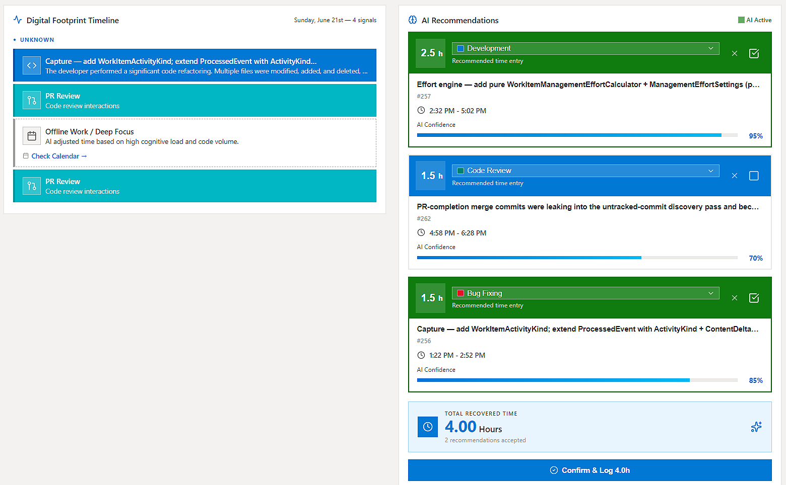
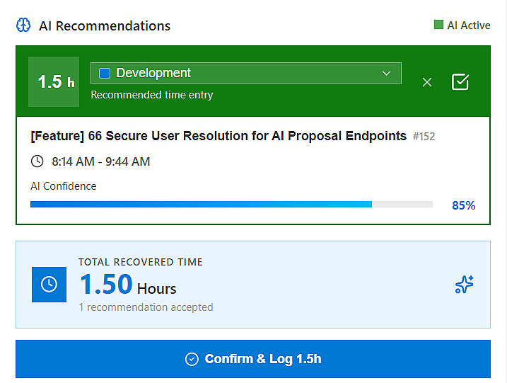
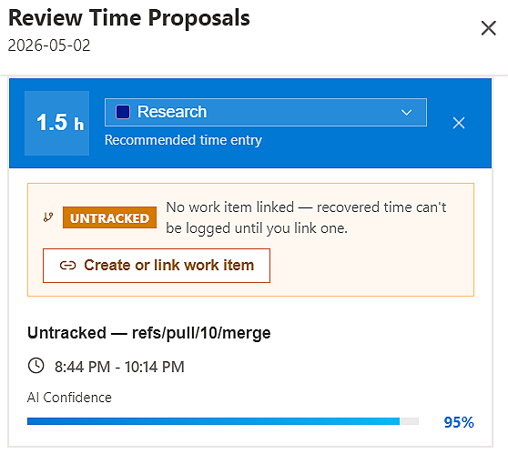
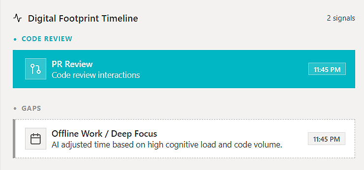
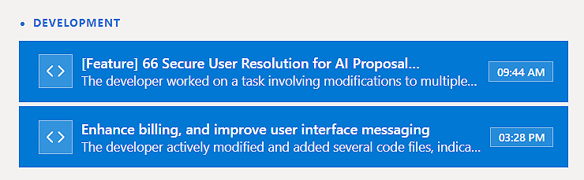
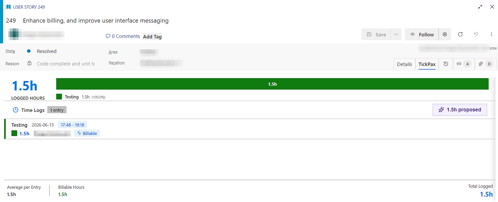
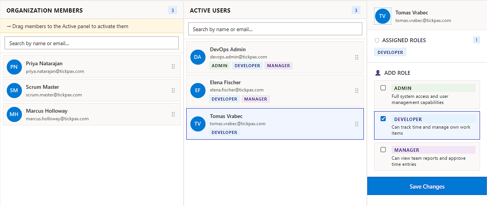
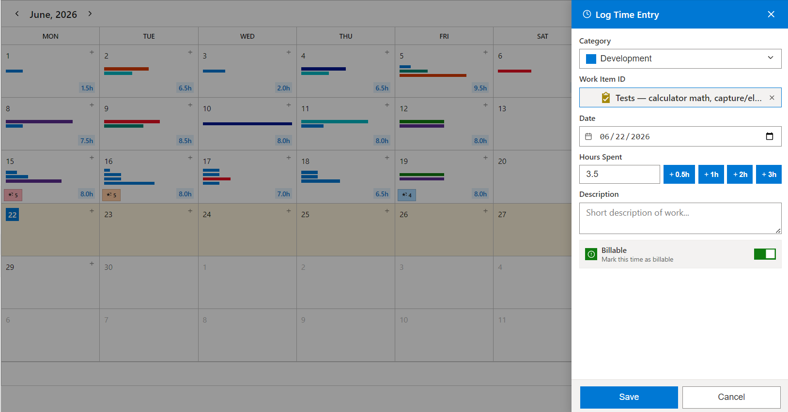

Turn Engineering Activity
Into Engineering Intelligence
TickPax uses AI to analyze commits, pull requests, work items, and delivery signals — recovering engineering effort, explaining where time goes, and creating trusted effort insights your organization can act on.
One-click install · Human-controlled AI · Free up to 5 users

Engineering teams generate massive amounts of delivery data —
but organizations still cannot see the full effort behind it.
Every day, teams create commits, pull requests, reviews, work item updates, and development activity. The signal is everywhere. The understanding is not.
Hidden effort disappears
Important engineering work is completed but never captured — commits without work item links, fixes between sprints, and review effort that no timesheet ever records.
Reporting depends on memory
Developers reconstruct their week manually, days after the work was done. The result is incomplete, inconsistent, and impossible to verify against what actually happened.
Managers lack confidence
Leadership sees activity dashboards, but not the true engineering effort behind them — making capacity, billing, and investment decisions on incomplete data.
From engineering activity to measurable effort
TickPax never silently posts unverified time. AI proposes, teams validate, and the organization learns — turning raw delivery telemetry into intelligence everyone can trust.
Engineering Signals
Commits, pull requests, reviews, and work item changes are captured directly from your organization.
AI Analysis Engine
Signals are correlated and clustered, effort is estimated per work item, and each proposal receives a confidence score.
Effort Intelligence
Activity becomes explainable effort: what work happened, how much it represented, and where capacity was invested.
Human Review
Engineers accept, adjust, or reject every proposal with full reasoning. Nothing is recorded without approval.
Trusted Records
Approved entries become audit-ready records, each traceable to the engineering activity that generated it.
Engineering intelligence, built for how teams actually work
Recover engineering work that disappears in traditional reporting
TickPax reads real delivery activity inside your engineering platform and generates AI effort proposals based on what was actually done — not estimates or memory. Review daily, weekly, or on a calendar.
- AI-generated daily and weekly effort proposals
- Calendar-based review and confirmation
- Work item association and context
- Deduplicated against existing manual logs

Measure the business value of recovered effort
The Recovered Engineering report charts cumulative AI-recovered hours over any range and converts them into measurable business impact — total hours, estimated value, and AI acceptance rate.
- Cumulative recovered-hours trend by day, week, or month
- Estimated value at your organization's hourly rate
- AI acceptance rate across actioned proposals
TickPax converts engineering activity into measurable business impact.
Find engineering work that was never properly captured
Commits that arrive with no linked work item are recovered as orphan proposals instead of being dropped. Attribute them, and TickPax writes the work back into your engineering platform for you.
- Discover commits without work item linkage
- Create or link work items from recovered activity
- Attach source commits and post completed work back

AI suggestions you can understand and trust
Every recommendation is traceable. Engineers and auditors see the exact signals, the reasoning, the confidence, and a proposed-versus-actual comparison. No black-box automation.
- Supporting activity and digital-footprint evidence
- Per-proposal confidence and heuristic method
- Proposed versus actual effort comparison
- Full activity audit trail per record


Built inside the engineering workflow
TickPax installs in one click and runs inside your project hubs, work item forms, boards, and repositories. No separate platform. No workflow disruption.
- Project hubs: Time Recovery, Calendar, Insights
- Work item tab for in-context logging
- Boards and repository activity as signal sources
- Organization-scoped controls and permissions

Control who's on the team and what they can see
Admins manage seats, assign roles, and set organization-wide permissions — so contributors own their own records, managers get visibility across their teams, and admins govern settings and access from one place.
- Invite users and assign Contributor, Manager, or Admin roles
- Per-role visibility and approval permissions
- Seat management across the organization
- Organization-wide settings and governance

Review on a calendar — or log and edit time by hand
Every AI proposal and confirmed entry lands on a monthly calendar with per-day totals, so you can scan the month at a glance and spot uncovered days. Need to add or correct something yourself? Open the Log Time Entry panel to set the category, work item, date, and hours, mark it billable, and save — full manual control alongside the AI.
- Monthly calendar with daily logged-hour totals
- Log time manually: category, work item, date, and hours
- Quick-add buttons (+0.5h / +1h / +2h / +3h) and a billable toggle
- Add, edit, or correct entries directly from the calendar

One platform. Built for the whole engineering organization.
Spend less time reporting work.
TickPax reads your actual delivery activity and proposes your effort. You review, adjust, and approve — in minutes, not hours — with less administrative overhead.
- No manual reconstruction of your week
- Work recovered from your real activity
- Review before anything is approved
- Full control over your own records
Understand where engineering effort creates value.
TickPax gives delivery and operations leaders accurate, consistent effort intelligence — linked directly to your work items and delivery outcomes.
- Delivery visibility across teams and projects
- Billable vs non-billable analysis
- Effort trends and ROI reporting
- Audit readiness with full traceability
The more your teams use TickPax,
the smarter your effort intelligence becomes.
TickPax is not a static model. It learns from every accepted proposal, every rejection, every adjustment, and your team's engineering patterns — building organization-specific intelligence that gets more accurate over time.
Software development is changing. Engineers now review AI-generated code, validate solutions, and manage increasingly complex workflows. TickPax provides the intelligence layer to understand modern engineering effort — not just hours, but the nature and value of the work.
A new category — not another timesheet
Traditional time tracking depends on memory and produces numbers nobody trusts. TickPax produces evidence-backed engineering intelligence.
- ✕ Memory-based reconstruction
- ✕ Late, after-the-fact reporting
- ✕ No supporting evidence
- ✕ Low, unverifiable accuracy
- ✕ Disconnected from the work system
- ✓ Workflow-native
- ✓ AI-assisted, generated from real activity
- ✓ Evidence-backed and fully traceable
- ✓ Human-controlled review and approval
- ✓ Focused on measurable business value
Built for organizations where engineering effort matters
Software Consultancies
Recover missing billable effort, improve utilization visibility, and give clients accurate, traceable delivery reporting.
- Billable hour recovery
- Utilization visibility
- Client-level reporting
Delivery & DevOps Partners
Add an intelligence layer after platform adoption and improve customer delivery visibility across engagements.
- Post-adoption intelligence
- Customer delivery visibility
- Native ecosystem alignment
Enterprise Engineering Orgs
Understand engineering investment, improve planning and reporting, and create consistent, audit-ready records across teams.
- Engineering investment insight
- Cross-team consistency
- Audit-ready records
Trusted by CTOs, Engineering Directors, Delivery Managers, Engineering Operations Leaders, and PMO Leaders.
Pricing that scales with your engineering teams
Start free. Expand as adoption grows. No hidden fees.
For small teams evaluating TickPax.
- Up to 5 users
- AI effort proposals
- Time Recovery & Calendar
- Work item integration
- Insights & ROI reporting
- Untracked work recovery
- Export & audit reports
For growing engineering teams.
- Unlimited users
- AI effort proposals
- Untracked work recovery
- Recovered Engineering ROI
- Manager insights
- Billable / non-billable analysis
- Unlimited time logs
For organizations scaling AI effort intelligence.
- Everything in Basic
- Highest AI proposal limits
- Unlimited time logs
- Full Insights suite
- AI accuracy & rejection analysis
- State variance reporting
- Export & audit reports
- Priority support
For large organizations and consulting firms.
- Everything in Pro
- Volume licensing
- Dedicated onboarding
- Multi-org management
- Audit & compliance pack
- Executive reporting
- SLA support
All paid plans include a 14-day free trial. No credit card required to start.
Intelligence you can stand behind in an audit
TickPax is built around human control, transparent AI, and organizational data boundaries.
Security-Reviewed Extension
Distributed through a trusted extension marketplace, subject to a rigorous extension security review process.
Secure Organization-Based Access
TickPax operates within your existing organization permissions. No external data exports required.
User-Controlled AI Approval
Every AI proposal must be reviewed and approved by the engineer before any record is created. No silent auto-posting.
Audit-Ready Reporting
Every approved record links back to the engineering activity that generated it — with proposal confidence, reasoning, and evidence.
Transparent AI Reasoning
Engineers and auditors see exactly what signals drove each proposal — commits, PRs, work items — with confidence and full explanation.
Role-Based Governance
Contributors own their submissions, managers gain visibility, and admins control organization-wide settings and seats.
Install in one click — no setup, no servers
TickPax is a verified, security-reviewed extension. Add it to your organization in under two minutes — no infrastructure changes, no separate deployment.
Join the TickPax Early Access Program
We are onboarding selected engineering teams to help shape the future of AI engineering effort intelligence. Early access members get priority support, direct input into the roadmap, and special launch pricing.
Stop guessing where engineering effort goes.
Transform engineering activity into trusted intelligence — with AI that recovers effort, explains itself, and keeps humans in control.
One-click install · Human-controlled AI · Free up to 5 users